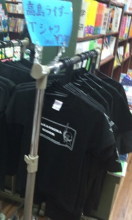

| 説明 |
|---|
| <赤塚公園> 赤塚公園は、東西にのびる大きな公園です。 園内には、自然林や、そこを通る遊歩道、広場と運動施設などがあり、 また、昆虫観察や野草観察なども楽しむことができます。 野球場やテニスコート、競技場を借りることができ、 バーベキュー広場は年間を通して無料でバーベキューを楽しめます。 |
| <高島平児童館> 東京都板橋区内で最も大きな児童館です。 広々としたホールを4分割し、ドッジボールやバスケ、卓球、なわとび、 マット運動の併用ができる上に、大型積み木を使った遊びをすることができます。 工作室は簡単な紙工作やぬり絵などができるように材料を準備しています。 |
| <子ども動物園 高島平分園>
ヒツジやヤギ・ウサギにアヒル・ガチョウ・クジャクバトなどが飼育されています。 その上、ヒツジやヤギに直接エサを与えることが出来る「はなしがい広場」や モルモットをだっこ出来る「モルモットだっこコーナー」まであります。 また、ポニーの特別体験乗馬のイベントも、 すべて無料で楽しめます。 |
| 高島ライダー | 写真 |
高島平には、ゆるキャラである高島ライダーというヒーローが存在しています。 高島平の地名の由来となった高島秋帆がモチーフになっており、 背中には大砲を背負っているにもかかわらず戦闘はしないらしいですが、 高島ライダーの姿自体、見た人は少ないという噂です。 右の写真は高島平駅近くにあった書店に売っていた、高島ライダーのTシャツです。 |
 |
|---|---|